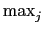
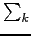

suivant: Réduction des matrices
monter: Les différentes norme d'une
précédent: Norme d'une matrice avec
Table des matières
Index
Norme d'une matrice avec la norme des colonnes : colnorm colNorm
colnorm (ou colNorm) a comme argument une matrice A.
colnorm (ou colNorm) renvoie
((| aj, k|)) si
l'argument est A = aj, k.
On tape :
colnorm([[1,2],[3,-4]])
ou
colNorm([[1,2],[3,-4]])
On obtient :
6
En effet :
max(1 + 3, 2 + 4) = 6
Documentation de giac écrite par Renée De Graeve